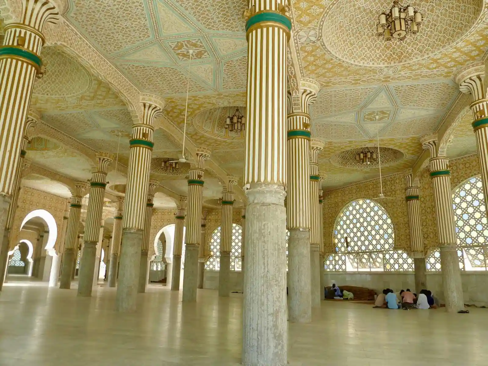

Programs & Services
Everything the masjid offers — from the five daily prayers to Qur’an classes, life-cycle services and pastoral care, for every stage of life.
Photo: E. Diop / Unsplash
Worship & community
A house of Allah, serving its community
Prayer times & Jumu’ah
Daily salah, three Jumu’ah congregations every Friday, and Eid and Ramadan prayers.
See prayer times → LearningQur’an, Arabic & Islamic studies
Small-group classes for adults and children, from first letters to tafsir.
About classes → YouthYouth programs
Halaqas, mentoring, sports and camps for teenagers and young adults.
Find out more → WomenWomen’s programs
Halaqa, book club, wellbeing circle and mothers’ group — plus a dedicated women’s prayer section.
Find out more → New to IslamNew-Muslim support
Shahada assistance, foundational learning and a community that walks beside you — including free courses through our da’wah partner IntroToIslam.
Get support → Life eventsNikah (marriage) services
Islamic marriage ceremonies conducted at the masjid, with pre-marital consultation.
Enquire → Life eventsJanazah (funeral) services
Ghusl, janazah salah and coordination with burial services, handled with dignity and care.
Get help → PastoralCounselling & chaplaincy
Confidential support from the Imam and masjid volunteers.
Make an appointment →Not sure where to start?
Call the office — we’ll point you the right way.
Whether you need a class timetable, help arranging a nikah or janazah, or simply someone to talk to, the office can connect you with the right person.